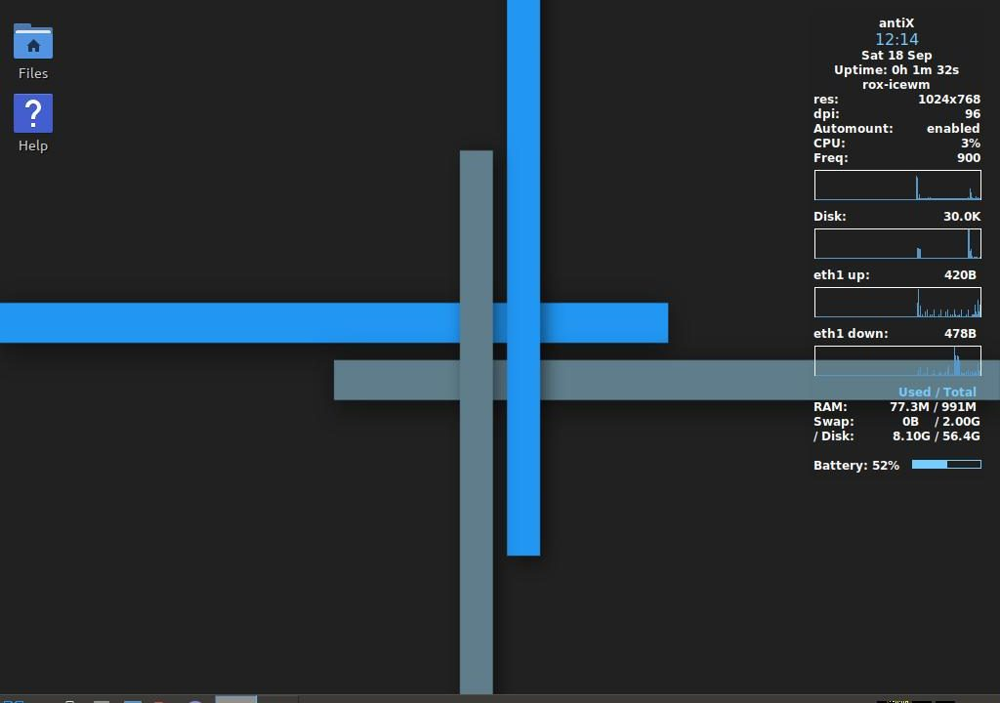

Thinkpad x40: A Linux Revival
This is the oldest laptop I own, sometime from the early 2000s. In this guide I'll show how to upgrade to an SSD and install Antix, a lightweight and efficient Linux distribution that runs smoothly on older hardware.